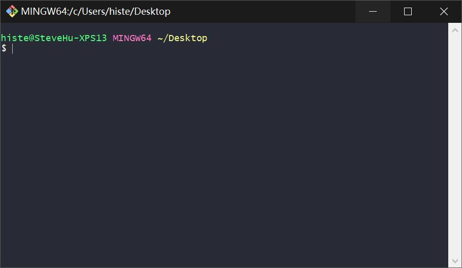
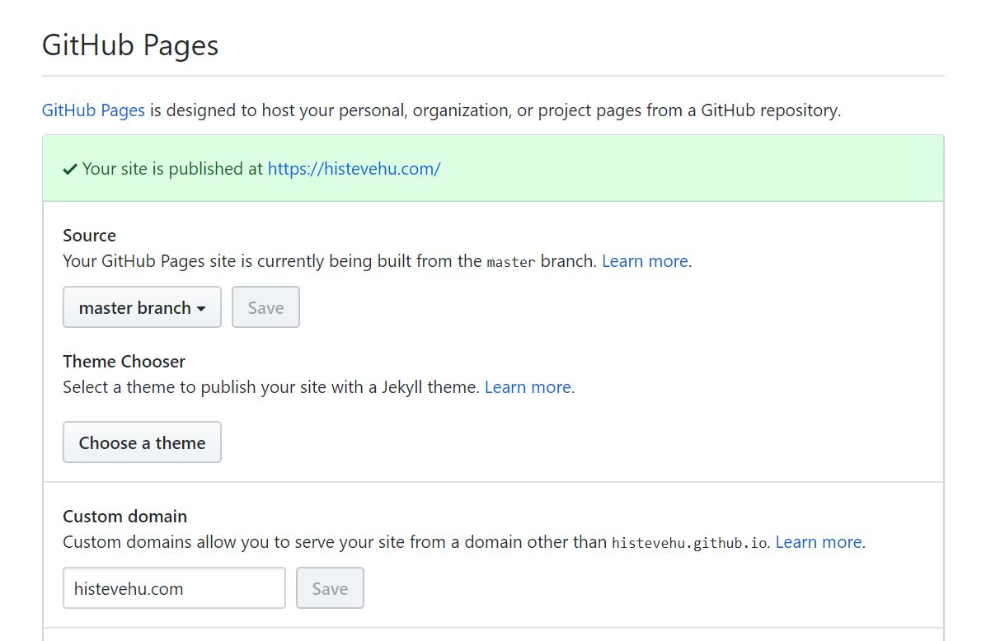
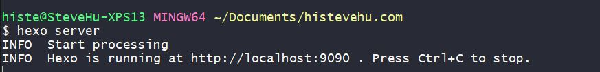

Building a website with the HEXO framework and Github Pages
Introduction
Here’s how to build a website using the Hexo framework and the Github Pages service.
Hexo framework
Fast, simple and efficient blog framework
Github Pages service
Steps
1. Github registration
Regist a Github account firstly. If you had one, you can skip this step. But remember your github username and the email address you filled in when you applied. This information will be used below.
2. Git, node.js installation
Git
-
Verify that the installation was successful:
Right click on the desktop, click on “Git Bash”, and pull out a similar command line window, indicating that Git is installed successfully

Git basic settings
In the Git terminal, input：
1
2git config --global user.name "Your Name“
git config --global user.email "email@example.com"Eg. Fill in your GitHub username in quotation marks “Your Name“. Fill in your email address you filled in when you applied in quotation marks “**email@example.com**”
-
Node.js
https://nodejs.org/en/download/
Verify that the installation was successful:
Win+R > “cmd” > “node –version”, if you could see the version information, indicating that Git is installed successfully.
3. Hexo installation
If you aren’t the Chinese user, you could skip to use Cnpm.
Cnpm is an open source image of Taobao, access speed is faster than npm in China. Cnpm is recommended.
Open the Git Terminal, input:
1
npm install -g cnpm --registry=https://registry.npm.taobao.org
If you use Cnpm, input:
1
cnpm install hexo
If you don’t use Cnpm, input:
1
npm install hexo
4. Basic configuration
Create a new folder as the site root
Open the folder, right click and select “Git Bash Here“
In the Git Terminal, input:
1
hexo init
Then we need to install the plugins and theme, here is the example of hexo-theme-even themes. Continue to input the command:
1
2
3npm install hexo-renderer-scss --save
npm install hexo-deployer-git --save
git clone https://gitee.com/xiuxiuing/hexo-theme-even themes/evenFind the _config.yml file in the root directory and open it. Change the contents of the deploy and #URL section of the file to the following:
1
2
3
4deploy:
type: git
repo: https://github/username/website_repository_name.git
branch: master1
2
3#URL
url: https://username.github.io/website_repository_name
root: /blogEg: If your username is “histevehu” and your website repository is “hi”, then your repo item and url item should be this:
<!> Note: There must be a space after the colon, otherwise it will not be recognized correctly.
5. Deploy
In the Git Terminal, continue to input:
1
hexo clean && hexo g && hexo d
Deploy the website, the first release requires entering the account and password in the shell.
6. Configure the Github Pages Service
Enter the your website repository page on Github, turn to the Settings tab, find the Github Pages item, enable the service.

You can also bind a custom domain name. Like:

Tips
1.Change the theme
Download the themes from Internet, like: https://hexo.io/themes/
Extract to themes folder in root directory of the site
Configure themes as the theme name in _config.yml in the root directory
Eg. If you change the theme named “polarbear”, then you should configure the theme item in _config.yml like this:
1
2> theme: polarbear
>Excute command “hexo clean && hexo g && hexo d“
2.Common Hexo instructions
hexo -g
Generate the site.
hexo -d
Deploy the site.
hexo g -d
Generate the site, then deploy it.
hexo server
Turn on local service, allowing users to preview the site locally.
P.S: If the default local port is occupied, you can modify it in _config.yml in the root directory
E.g: Modify the local port to 9090
Add this code blocks in _config.yml
2
3
4
5
> port: 9090
> compress: true
> header: true
>
Then test it. Input the command in Git Terminal
2
>
If the terminal displays this, it means the default local modification is successful.

hexo clean
Clean up the site cache, especially if you change the theme you should use this command